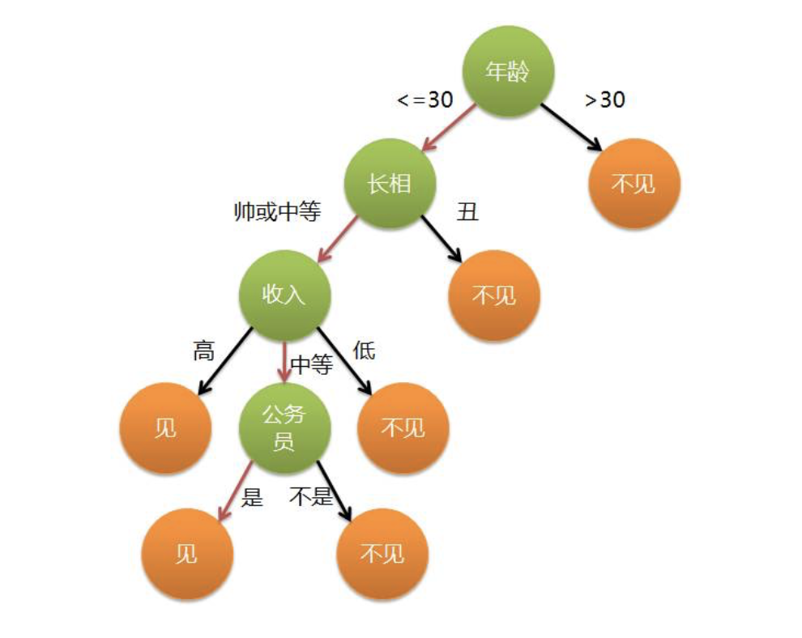

<!DOCTYPE html>
<html lang=zh>
<head>
    <meta charset="utf-8">
    
    <title>算法02：分类算法 | Tyrival</title>
    <meta name="viewport" content="width=device-width, initial-scale=1, maximum-scale=1" />
    <meta name="description" content="分类算法，是从数据集中提取描述数据类的一个函数或模型（也叫分类器），并将数据集中每个样本归结到某个已知的类中。分类算法的目标是对已有数据进行分类，并预测未来数据的归类，分类算法常用语医疗诊断、图像识别模式等领域。常见分类算法包括贝叶斯（Bayes）、决策树（Decision Tree）、支持向量机（SVM）、K近邻（KNN）、逻辑回归（Logistic Regression）、神经网络、深度学习等">
<meta name="keywords" content="algorithm">
<meta property="og:type" content="article">
<meta property="og:title" content="算法02：分类算法">
<meta property="og:url" content="http://tyrival.github.io/posts/algorithm-02/index.html">
<meta property="og:site_name" content="Tyrival">
<meta property="og:description" content="分类算法，是从数据集中提取描述数据类的一个函数或模型（也叫分类器），并将数据集中每个样本归结到某个已知的类中。分类算法的目标是对已有数据进行分类，并预测未来数据的归类，分类算法常用语医疗诊断、图像识别模式等领域。常见分类算法包括贝叶斯（Bayes）、决策树（Decision Tree）、支持向量机（SVM）、K近邻（KNN）、逻辑回归（Logistic Regression）、神经网络、深度学习等">
<meta property="og:locale" content="zh-CN">
<meta property="og:image" content="http://tyrival.github.io/posts/algorithm-02/dt-01.png">
<meta property="og:updated_time" content="2018-02-25T09:58:29.367Z">
<meta name="twitter:card" content="summary">
<meta name="twitter:title" content="算法02：分类算法">
<meta name="twitter:description" content="分类算法，是从数据集中提取描述数据类的一个函数或模型（也叫分类器），并将数据集中每个样本归结到某个已知的类中。分类算法的目标是对已有数据进行分类，并预测未来数据的归类，分类算法常用语医疗诊断、图像识别模式等领域。常见分类算法包括贝叶斯（Bayes）、决策树（Decision Tree）、支持向量机（SVM）、K近邻（KNN）、逻辑回归（Logistic Regression）、神经网络、深度学习等">
<meta name="twitter:image" content="http://tyrival.github.io/posts/algorithm-02/dt-01.png">
    

    

    
        <link rel="icon" href="/css/images/logo.png" />
    

    <link rel="stylesheet" href="/libs/font-awesome/css/font-awesome.min.css">
    <link rel="stylesheet" href="/libs/open-sans/styles.css">
    <link rel="stylesheet" href="/libs/source-code-pro/styles.css">

    <link rel="stylesheet" href="/css/style.css">

    <script src="/libs/jquery/2.1.3/jquery.min.js"></script>
    
    
        <link rel="stylesheet" href="/libs/lightgallery/css/lightgallery.min.css">
    
    
        <link rel="stylesheet" href="/libs/justified-gallery/justifiedGallery.min.css">
    
    
    
    


</head>

<body>
    <div id="container">
        <header id="header">
    <div id="header-main" class="header-inner">
        <div class="outer">
            <a href="/" id="logo">
                <i class="logo"></i>
                <span class="site-title">Tyrival</span>
            </a>
            <nav id="main-nav">
                
                    <a class="main-nav-link" href="http://www.tyrival.com">主页</a>
                
                    <a class="main-nav-link" href="/categories">分类</a>
                
                    <a class="main-nav-link" href="/tags">标签</a>
                
            </nav>
            
                
                <nav id="sub-nav">
                    <div class="profile" id="profile-nav">
                        <a id="profile-anchor" href="javascript:;">
                            
                            <i class="fa fa-caret-down"></i>
                        </a>
                    </div>
                </nav>
            
            <div id="search-form-wrap">

    <form class="search-form">
        <input type="text" class="ins-search-input search-form-input" placeholder="搜索" />
        <button type="submit" class="search-form-submit"></button>
    </form>
    <div class="ins-search">
    <div class="ins-search-mask"></div>
    <div class="ins-search-container">
        <div class="ins-input-wrapper">
            <input type="text" class="ins-search-input" placeholder="想要查找什么..." />
            <span class="ins-close ins-selectable"><i class="fa fa-times-circle"></i></span>
        </div>
        <div class="ins-section-wrapper">
            <div class="ins-section-container"></div>
        </div>
    </div>
</div>
<script>
(function (window) {
    var INSIGHT_CONFIG = {
        TRANSLATION: {
            POSTS: '文章',
            PAGES: '页面',
            CATEGORIES: '分类',
            TAGS: '标签',
            UNTITLED: '(未命名)',
        },
        ROOT_URL: '/',
        CONTENT_URL: '/content.json',
    };
    window.INSIGHT_CONFIG = INSIGHT_CONFIG;
})(window);
</script>
<script src="/js/insight.js"></script>

</div>
        </div>
    </div>
    <div id="main-nav-mobile" class="header-sub header-inner">
        <table class="menu outer">
            <tr>
                
                    <td><a class="main-nav-link" href="http://www.tyrival.com">主页</a></td>
                
                    <td><a class="main-nav-link" href="/categories">分类</a></td>
                
                    <td><a class="main-nav-link" href="/tags">标签</a></td>
                
                <td>
                    
    <div class="search-form">
        <input type="text" class="ins-search-input search-form-input" placeholder="搜索" />
    </div>

                </td>
            </tr>
        </table>
    </div>
</header>

        <div class="outer">
            
                

<aside id="profile">
    <div class="inner profile-inner">
        <div class="base-info profile-block">
            
            <h2 id="name">周晨煜</h2>
            <h3 id="title">程序员 &amp; 自学狂</h3>
            <span id="location"><i class="fa fa-map-marker"></i>无锡, 中国</span>
            <a id="follow" target="_blank" href="https://github.com/tyrival">关注我</a>
        </div>
        <div class="article-info profile-block">
            <div class="article-info-block">
                37
                <span>文章</span>
            </div>
            <div class="article-info-block">
                18
                <span>标签</span>
            </div>
        </div>
        
        <div class="profile-block social-links">
            <table>
                <tr>
                    
                    
                    <td>
                        <a href="https://github.com/tyrival" target="_blank" title="github" class=tooltip>
                            <i class="fa fa-github"></i>
                        </a>
                    </td>
                    
                    <td>
                        <a href="https://twitter.com/Tyrival" target="_blank" title="twitter" class=tooltip>
                            <i class="fa fa-twitter"></i>
                        </a>
                    </td>
                    
                </tr>
            </table>
        </div>
        
    </div>
</aside>

            
            <section id="main"><article id="post-algorithm-02" class="article article-type-post" itemscope itemprop="blogPost">
    <div class="article-inner">
        
        
            <header class="article-header">
                
    
        <h1 class="article-title" itemprop="name">
            算法02：分类算法
        </h1>
    

                
                    <div class="article-meta">
                        
    <div class="article-date">
        <i class="fa fa-calendar"></i>
        <a href="/posts/algorithm-02/">
            <time datetime="2018-02-25T00:26:06.217Z" itemprop="datePublished">2018-02-25</time>
        </a>
    </div>


                        
    <div class="article-category">
    	<i class="fa fa-folder"></i>
        <a class="article-category-link" href="/categories/算法/">算法</a>
    </div>

                        
    <div class="article-tag">
        <i class="fa fa-tag"></i>
        <a class="tag-link" href="/tags/algorithm/">algorithm</a>
    </div>

                    </div>
                
            </header>
        
        
        <div class="article-entry" itemprop="articleBody">
        
            
            <p><strong>分类算法</strong>，是从数据集中提取描述数据类的一个函数或模型（也叫分类器），并将数据集中每个样本归结到某个已知的类中。分类算法的目标是对已有数据进行分类，并预测未来数据的归类，分类算法常用语医疗诊断、图像识别模式等领域。常见分类算法包括贝叶斯（Bayes）、决策树（Decision Tree）、支持向量机（SVM）、K近邻（KNN）、逻辑回归（Logistic Regression）、神经网络、深度学习等。</p>
<a id="more"></a>
<hr>
<h1 id="朴素贝叶斯（Naive-Bayes）"><a href="#朴素贝叶斯（Naive-Bayes）" class="headerlink" title="朴素贝叶斯（Naive Bayes）"></a>朴素贝叶斯（Naive Bayes）</h1><p>贝叶斯分类法是基于贝叶斯定理的一种十分简单的分类算法，核心思想是，对于待分类的对象，求该对象在各类别出现的概率，哪个概率最大，就将此对象归入哪个类别。朴素贝叶斯有一个前提，每个特征值相对于其他特征值必须独立——类条件独立性。</p>
<blockquote>
<p>贝叶斯定理：</p>
<p>$$P(A|B)=\cfrac{P(B|A)P(A)}{P(B)}$$</p>
<ul>
<li>P(A|B)是在B发生的情况下，A的发生概率，即A的后验概率；</li>
<li>P(<em>A</em>)是发生A的概率，即A的先验概率；</li>
<li>P(<em>B</em>|<em>A</em>)是在A发生的情况下，B的发生概率，即B的后验概率；</li>
<li>P(<em>B</em>)是发生B的概率，即B的先验概率。</li>
</ul>
</blockquote>
<h3 id="公式"><a href="#公式" class="headerlink" title="公式"></a>公式</h3><p>假设某样本有n项特征（Feature），分别为$F_1$、$F_2$、…、$F_n$。现有m个类别（Category），分别为$C_1$、$C_2$、…、$C_m$。贝叶斯分类器就是计算出概率最大的那个分类，也就是求下面这个算式的最大值：</p>
<p>$$P(C|F_1F_2…F_n)=\cfrac{P(F_1F_2…F_n|C)P(C)}{P(F_1F_2…F_n)}$$</p>
<p>由于 P(F1F2…Fn) 对于所有的类别都是相同的，可以省略，问题就变成了求下式的最大值：</p>
<p>$$P(F_1F_2…F_n|C)P(C)$$</p>
<p>朴素贝叶斯分类器则是更进一步，假设所有特征都彼此独立，因此</p>
<p>$$P(F_1F_2…F_n|C)P(C)=P(F_1|C)P(F_2|C) … P(F_n|C)P(C)$$</p>
<p>上式等号右边的每一项，都可以从样本资料中计算得到，由此就可以计算出每个类别对应的概率，从而找出最大概率的那个类。</p>
<h3 id="案例"><a href="#案例" class="headerlink" title="案例"></a>案例</h3><p>有一组样本数据，记录了各门诊病人的职业、症状和确诊疾病，如下：</p>
<table>
<thead>
<tr>
<th style="text-align:center">职业</th>
<th style="text-align:center">症状</th>
<th style="text-align:center">疾病</th>
</tr>
</thead>
<tbody>
<tr>
<td style="text-align:center">护士</td>
<td style="text-align:center">打喷嚏</td>
<td style="text-align:center">感冒</td>
</tr>
<tr>
<td style="text-align:center">农夫</td>
<td style="text-align:center">打喷嚏</td>
<td style="text-align:center">过敏</td>
</tr>
<tr>
<td style="text-align:center">工人</td>
<td style="text-align:center">头痛</td>
<td style="text-align:center">脑震荡</td>
</tr>
<tr>
<td style="text-align:center">工人</td>
<td style="text-align:center">头痛</td>
<td style="text-align:center">感冒</td>
</tr>
<tr>
<td style="text-align:center">教师</td>
<td style="text-align:center">打喷嚏</td>
<td style="text-align:center">感冒</td>
</tr>
<tr>
<td style="text-align:center">教师</td>
<td style="text-align:center">头痛</td>
<td style="text-align:center">脑震荡</td>
</tr>
</tbody>
</table>
<p>现在来了一个打喷嚏的工人，请问他最有可能是什么疾病？</p>
<ul>
<li>设疾病为<code>Category={&quot;感冒&quot;, &quot;过敏&quot;, &quot;脑震荡&quot;}</code>，职业和症状为<code>Feature={&quot;工人&quot;, &quot;打喷嚏&quot;}</code></li>
<li>首先计算此人得感冒的概率，根据贝叶斯定理，可</li>
</ul>
<p>$$P(感冒|打喷嚏×工人)=\cfrac{P(打喷嚏×工人|感冒)×P(感冒)}{P(打喷嚏×工人)}$$</p>
<p>由于朴素贝叶斯中各特征值独立，即“症状”（打喷嚏）和“职业”（工人）相互独立，上面的等式变为</p>
<p>$$P(感冒|打喷嚏×工人)=\cfrac{P(打喷嚏|感冒)×P(工人|感冒)×P(感冒)}{P(打喷嚏×工人)}$$</p>
<p>等号右边的所有概率P都可以根据样本数据计算得到</p>
<p>$$P(感冒|打喷嚏×工人)=\cfrac{0.66×0.33×0.5}{0.5×0.33}=0.66$$</p>
<p>所以他得感冒的概率为66%</p>
<ul>
<li>同理计算此人患过敏或脑震荡的概率，比较后就能知道他最可能的疾病</li>
</ul>
<h3 id="优点"><a href="#优点" class="headerlink" title="优点"></a>优点</h3><ul>
<li>过程简单速度快；</li>
<li>在属性独立假设成立的前提下，效果极佳，所需样本量也少。</li>
</ul>
<h3 id="缺点"><a href="#缺点" class="headerlink" title="缺点"></a>缺点</h3><ul>
<li>属性间相互独立的假设经常不成立；</li>
<li>通过先验和数据来决定后验的概率从而决定分类，先验概率很多时候取决于假设，存在一定的错误率。</li>
</ul>
<h3 id="应用"><a href="#应用" class="headerlink" title="应用"></a>应用</h3><ul>
<li>需要不同维度之间相关性较小的样本，例如：垃圾邮件识别、微博上的褒贬情绪判断等。</li>
</ul>
<hr>
<h1 id="决策树（Decision-Tree）"><a href="#决策树（Decision-Tree）" class="headerlink" title="决策树（Decision Tree）"></a>决策树（Decision Tree）</h1><p>决策树是一个树结构（二叉树或非二叉树），使用时从根节点开始，在每个非叶节点测试样本中相应的属性值，按照属性值进行分支输出，直至到达叶节点，每个叶节点代表一个类别，将最终到达的叶节点作为决策结果。</p>
<p>构造决策树的关键是分裂属性，在非叶节点按照某个属性值的不同，划分构造不同的分支，目标是让各分裂子集尽可能单纯，即让分裂后的子集中的待分类样本属于同意类别。分裂属性包含以下三种情况：</p>
<ul>
<li>属性是离散值（名称型Nornimal）且不要求生成二叉决策树时，属性的每个值作为一个分支。</li>
<li>属性是离散值（名称型Nornimal），且要求生成二叉决策树时，使用属性划分的一个子集进行测试，按照“属于此子集”和“不属于此子集”分成两个分支。</li>
<li>属性是连续值（数字型Numeric）。此时确定一个值作为分裂点split_point，按照&gt;split_point和&lt;=split_point生成两个分支。</li>
</ul>
<p>例如有以下对话：</p>
<blockquote>
<p>女儿：多大年纪了？</p>
<p>母亲：26。</p>
<p>女儿：长的帅不帅？</p>
<p>母亲：挺帅的。</p>
<p>女儿：收入高不？</p>
<p>母亲：不算很高，中等情况。</p>
<p>女儿：是公务员不？</p>
<p>母亲：是，在税务局上班呢。</p>
<p>女儿：那好，我去见见。</p>
</blockquote>
<p>这就是典型的决策树，通过年龄、长相、收入和是否是公务员的判断，得到最终的两个类别：见和不见。</p>
<p></p>
<ul>
<li>年龄属性是连续值，此时假设女儿选择30作为分裂点，按照&lt;=30和&gt;30生成两个分支；</li>
<li>长相是连续值，且要求生成二叉树，属性划分为“丑”和“不丑”子集，生成两个分支；</li>
<li>收入是离散值，包括高、中、低三个值，此处不要求生成二叉树，每个值作为一个分支。</li>
</ul>
<p>在构造决策树的过程中，决策点的选取和决策顺序非常重要，良好的决策顺序和分支设定可以减少性能消耗，提高效率，因此需要一个量化的方法，选取决策划分点和划分顺序。常见决策树算法包括<strong>ID3</strong>和<strong>C4.5</strong>。</p>
<h2 id="ID3算法"><a href="#ID3算法" class="headerlink" title="ID3算法"></a>ID3算法</h2><p>ID3算法建立在“奥卡姆剃刀”的基础上：越是小型的决策树优于大的决策树。</p>
<p>ID3算法的重要衡量标准为<strong>熵</strong>和<strong>信息增益</strong>。</p>
<p><strong>熵（entropy）</strong>是整个系统的平均消息量，一个系统越是有序，熵就越低；反之，熵就越高，所以，熵也可以说是系统有序化程度的一个度量。反映到决策树上，熵越大，在决策树上要达到叶节点（即输出最终结果），所需要判断的属性就越多，效率就越低。</p>
<p><strong>信息熵</strong>，代表随机变量的复杂度。</p>
<p><strong>条件熵</strong>，代表在某一个条件下，随机变量的复杂度。</p>
<p><strong>信息增益</strong>，表示得知某个属性之后，使得样本集合不确定度减少的程度。</p>
<p>$$信息增益=信息熵-条件熵$$</p>
<h3 id="过程"><a href="#过程" class="headerlink" title="过程"></a>过程</h3><ul>
<li>计算信息熵</li>
</ul>
<p>样本集合D中有$k$类样本，其中第$i$类所占比例为$P_i$，D的信息熵计算公式如下：</p>
<p>$$Entropy(D)=-\sum_{i=1}^k P_i\log_2 P_i$$</p>
<ul>
<li>计算信息增益</li>
</ul>
<p>$a$表示某个属性，$V(a)$表示属性a的值的数量，$D$是样本集合，$D^v$是$D$中在$a$属性上，值等于$v$的样本集合，信息增益计算公式如下：</p>
<p>$$Gain(D,a)=Entropy(D)-\sum_{v\in V(a)}\cfrac{|D^v|}{|D|}Entropy(D^v)$$</p>
<h3 id="案例-1"><a href="#案例-1" class="headerlink" title="案例"></a>案例</h3><p>假设样本集合D某个属性a有3个分支x、y、z，通过对样本数据的统计，发现10个样本中，有6个走向了x分支、3个走向y分支，1个走向z分支。</p>
<ul>
<li><p>计算熵</p>
<p>$$Ent(D_x)=\cfrac{6}{10}\log_2\cfrac{6}{10}$$</p>
<p>$$Ent(D_y)=\cfrac{3}{10}\log_2\cfrac{3}{10}$$</p>
<p>$$Ent(D_z)=\cfrac{1}{10}\log_2\cfrac{1}{10}$$</p>
<p>$$Ent(D)=-P_x-P_y-P_z$$</p>
</li>
<li><p>计算信息增益</p>
<p>$$Gain(D, a)=Ent(D)-(\cfrac{6}{10}\times Ent(D_x)+\cfrac{3}{10}\times Ent(D_y)+\cfrac{1}{10}\times Ent(D_z))$$</p>
</li>
<li><p>计算其他属性的信息增益，进行对比，选择信息增益最高的属性作为当前节点，假设属性$a$的信息增益最高，则$a$作为当前节点的测试属性，x、y、z作为三个分支，将集合D分为三部分$D_x$、$D_y$、$D_z$</p>
</li>
<li><p>针对上一步得到的各分支，重复前三步，向下递归构成决策树</p>
</li>
<li><p>决策树构建时，某条路径终止的条件有两种：</p>
<ul>
<li>这条路径包括了所有的属性。</li>
<li>某个分支输出的样本集合，剩余的属性值全部相同，则终止并得到一个叶节点。</li>
</ul>
</li>
</ul>
<h3 id="优点-1"><a href="#优点-1" class="headerlink" title="优点"></a>优点</h3><ul>
<li>构建决策树的速度比较快，算法实现简单，生成的规则容易理解。</li>
</ul>
<h3 id="缺点-1"><a href="#缺点-1" class="headerlink" title="缺点"></a>缺点</h3><ul>
<li>在属性选择时，倾向于选择那些拥有多个属性值的属性作为分裂属性，例如：当一个属性为ID时，这个属性会被作为根节点，而实际上这并没有意义。</li>
</ul>
<h3 id="应用-1"><a href="#应用-1" class="headerlink" title="应用"></a>应用</h3><ul>
<li>可以训练缺少属性值的实例。</li>
</ul>
<h2 id="C4-5算法"><a href="#C4-5算法" class="headerlink" title="C4.5算法"></a>C4.5算法</h2><p>C4.5算法是对ID3算发的改进，C4.5算法不使用信息增益来选取特征值，而是使用了<strong>信息增益率</strong>。</p>
<p>$$信息增益率=\cfrac{信息增益}{属性固有值}$$</p>
<p>公式如下：</p>
<p>$$GainRadio(D,a)=\cfrac{Gain(D,a)}{IV(a)}$$</p>
<p>$$IV(a)=-\sum_{v\in V(a)}\cfrac{|D^v|}{|D|}\log_2\cfrac{|D^v|}{|D|}$$</p>
<p>属性固有值$IV(a)$随着$a$的值域数量增大而增大，此时优先选择GainRadio较大的属性作为当前节点，然后向下递归。</p>
<h3 id="优点-2"><a href="#优点-2" class="headerlink" title="优点"></a>优点</h3><ul>
<li>既保证了信息增益高于平均水平，又避免出现选择ID作为特征这种极端的情况。</li>
</ul>
<h3 id="缺点-2"><a href="#缺点-2" class="headerlink" title="缺点"></a>缺点</h3><ul>
<li>在构造树的过程中，需要对数据集进行多次顺序扫描和排序，导致算法低效。</li>
</ul>

        
        </div>
        <footer class="article-footer">
            <div class="share-container">


</div>

    <a data-url="http://tyrival.github.io/posts/algorithm-02/" data-id="cjeu2caav000355a73q43g0fo" class="article-share-link"><i class="fa fa-share"></i>分享到</a>
<script>
    (function ($) {
        // Prevent duplicate binding
        if (typeof(__SHARE_BUTTON_BINDED__) === 'undefined' || !__SHARE_BUTTON_BINDED__) {
            __SHARE_BUTTON_BINDED__ = true;
        } else {
            return;
        }
        $('body').on('click', function() {
            $('.article-share-box.on').removeClass('on');
        }).on('click', '.article-share-link', function(e) {
            e.stopPropagation();

            var $this = $(this),
                url = $this.attr('data-url'),
                encodedUrl = encodeURIComponent(url),
                id = 'article-share-box-' + $this.attr('data-id'),
                offset = $this.offset(),
                box;

            if ($('#' + id).length) {
                box = $('#' + id);

                if (box.hasClass('on')){
                    box.removeClass('on');
                    return;
                }
            } else {
                var html = [
                    '<div id="' + id + '" class="article-share-box">',
                        '<input class="article-share-input" value="' + url + '">',
                        '<div class="article-share-links">',
                            '<a href="https://twitter.com/intent/tweet?url=' + encodedUrl + '" class="fa fa-twitter article-share-twitter" target="_blank" title="Twitter"></a>',
                            '<a href="https://www.facebook.com/sharer.php?u=' + encodedUrl + '" class="fa fa-facebook article-share-facebook" target="_blank" title="Facebook"></a>',
                            '<a href="http://pinterest.com/pin/create/button/?url=' + encodedUrl + '" class="fa fa-pinterest article-share-pinterest" target="_blank" title="Pinterest"></a>',
                            '<a href="https://plus.google.com/share?url=' + encodedUrl + '" class="fa fa-google article-share-google" target="_blank" title="Google+"></a>',
                        '</div>',
                    '</div>'
                ].join('');

              box = $(html);

              $('body').append(box);
            }

            $('.article-share-box.on').hide();

            box.css({
                top: offset.top + 25,
                left: offset.left
            }).addClass('on');

        }).on('click', '.article-share-box', function (e) {
            e.stopPropagation();
        }).on('click', '.article-share-box-input', function () {
            $(this).select();
        }).on('click', '.article-share-box-link', function (e) {
            e.preventDefault();
            e.stopPropagation();

            window.open(this.href, 'article-share-box-window-' + Date.now(), 'width=500,height=450');
        });
    })(jQuery);
</script>

            
    

        </footer>
    </div>
    
        
<nav id="article-nav">
    
        <a href="/posts/algorithm-03/" id="article-nav-newer" class="article-nav-link-wrap">
            <strong class="article-nav-caption">上一篇</strong>
            <div class="article-nav-title">
                
                    算法03：回归算法
                
            </div>
        </a>
    
    
        <a href="/posts/algorithm-01/" id="article-nav-older" class="article-nav-link-wrap">
            <strong class="article-nav-caption">下一篇</strong>
            <div class="article-nav-title">算法01：聚类算法</div>
        </a>
    
</nav>


    
</article>


    
    
        <section id="comments">
	<div id="commentContainer"></div>
</section>
    

</section>
            
                
<aside id="sidebar">
   
        
    <div class="widget-wrap">
        <h3 class="widget-title">最新文章</h3>
        <div class="widget">
            <ul id="recent-post" class="no-thumbnail">
                
                    <li>
                        
                        <div class="item-inner">
                            <p class="item-category"><a class="article-category-link" href="/categories/前端/">前端</a></p>
                            <p class="item-title"><a href="/posts/two-way-data-binding/" class="title">前端双向数据绑定的优势</a></p>
                            <p class="item-date"><time datetime="2018-03-16T13:17:50.380Z" itemprop="datePublished">2018-03-16</time></p>
                        </div>
                    </li>
                
                    <li>
                        
                        <div class="item-inner">
                            <p class="item-category"><a class="article-category-link" href="/categories/前端/">前端</a></p>
                            <p class="item-title"><a href="/posts/cors-solutions/" class="title">前端跨域及解决方案</a></p>
                            <p class="item-date"><time datetime="2018-03-15T01:41:08.747Z" itemprop="datePublished">2018-03-15</time></p>
                        </div>
                    </li>
                
                    <li>
                        
                        <div class="item-inner">
                            <p class="item-category"><a class="article-category-link" href="/categories/后端/">后端</a></p>
                            <p class="item-title"><a href="/posts/java-reflect-invoke-method/" class="title">Java反射：通过方法名调用方法</a></p>
                            <p class="item-date"><time datetime="2018-03-08T01:57:44.384Z" itemprop="datePublished">2018-03-08</time></p>
                        </div>
                    </li>
                
                    <li>
                        
                        <div class="item-inner">
                            <p class="item-category"><a class="article-category-link" href="/categories/后端/">后端</a></p>
                            <p class="item-title"><a href="/posts/java-dynamic-compile/" class="title">Java动态编译</a></p>
                            <p class="item-date"><time datetime="2018-03-08T00:44:12.000Z" itemprop="datePublished">2018-03-08</time></p>
                        </div>
                    </li>
                
                    <li>
                        
                        <div class="item-inner">
                            <p class="item-category"><a class="article-category-link" href="/categories/后端/">后端</a></p>
                            <p class="item-title"><a href="/posts/python-01/" class="title">Python01：MacOS升级Python2到Python3，以及误删系统自带Python的解决方法</a></p>
                            <p class="item-date"><time datetime="2018-03-03T11:57:14.970Z" itemprop="datePublished">2018-03-03</time></p>
                        </div>
                    </li>
                
            </ul>
        </div>
    </div>

    
        
    <div class="widget-wrap">
        <h3 class="widget-title">分类</h3>
        <div class="widget">
            <ul class="category-list"><li class="category-list-item"><a class="category-list-link" href="/categories/hadoop/">hadoop</a><span class="category-list-count">8</span></li><li class="category-list-item"><a class="category-list-link" href="/categories/iOS/">iOS</a><span class="category-list-count">1</span></li><li class="category-list-item"><a class="category-list-link" href="/categories/前端/">前端</a><span class="category-list-count">14</span></li><li class="category-list-item"><a class="category-list-link" href="/categories/后端/">后端</a><span class="category-list-count">3</span></li><li class="category-list-item"><a class="category-list-link" href="/categories/工具/">工具</a><span class="category-list-count">1</span></li><li class="category-list-item"><a class="category-list-link" href="/categories/服务器/">服务器</a><span class="category-list-count">2</span></li><li class="category-list-item"><a class="category-list-link" href="/categories/硬件/">硬件</a><span class="category-list-count">2</span></li><li class="category-list-item"><a class="category-list-link" href="/categories/算法/">算法</a><span class="category-list-count">3</span></li><li class="category-list-item"><a class="category-list-link" href="/categories/系统/">系统</a><span class="category-list-count">3</span></li></ul>
        </div>
    </div>

    
        
    <div class="widget-wrap">
        <h3 class="widget-title">标签</h3>
        <div class="widget">
            <ul class="tag-list"><li class="tag-list-item"><a class="tag-list-link" href="/tags/algorithm/">algorithm</a><span class="tag-list-count">3</span></li><li class="tag-list-item"><a class="tag-list-link" href="/tags/cloud/">cloud</a><span class="tag-list-count">1</span></li><li class="tag-list-item"><a class="tag-list-link" href="/tags/css/">css</a><span class="tag-list-count">2</span></li><li class="tag-list-item"><a class="tag-list-link" href="/tags/database/">database</a><span class="tag-list-count">2</span></li><li class="tag-list-item"><a class="tag-list-link" href="/tags/f-k-ie/">f**k ie</a><span class="tag-list-count">3</span></li><li class="tag-list-item"><a class="tag-list-link" href="/tags/git/">git</a><span class="tag-list-count">1</span></li><li class="tag-list-item"><a class="tag-list-link" href="/tags/hadoop/">hadoop</a><span class="tag-list-count">8</span></li><li class="tag-list-item"><a class="tag-list-link" href="/tags/java/">java</a><span class="tag-list-count">2</span></li><li class="tag-list-item"><a class="tag-list-link" href="/tags/javascript/">javascript</a><span class="tag-list-count">12</span></li><li class="tag-list-item"><a class="tag-list-link" href="/tags/less/">less</a><span class="tag-list-count">1</span></li><li class="tag-list-item"><a class="tag-list-link" href="/tags/linux/">linux</a><span class="tag-list-count">3</span></li><li class="tag-list-item"><a class="tag-list-link" href="/tags/mac/">mac</a><span class="tag-list-count">1</span></li><li class="tag-list-item"><a class="tag-list-link" href="/tags/python/">python</a><span class="tag-list-count">1</span></li><li class="tag-list-item"><a class="tag-list-link" href="/tags/raspberry/">raspberry</a><span class="tag-list-count">2</span></li><li class="tag-list-item"><a class="tag-list-link" href="/tags/server/">server</a><span class="tag-list-count">6</span></li><li class="tag-list-item"><a class="tag-list-link" href="/tags/swift/">swift</a><span class="tag-list-count">1</span></li><li class="tag-list-item"><a class="tag-list-link" href="/tags/tomcat/">tomcat</a><span class="tag-list-count">1</span></li><li class="tag-list-item"><a class="tag-list-link" href="/tags/vue/">vue</a><span class="tag-list-count">2</span></li></ul>
        </div>
    </div>

    
        
    <div class="widget-wrap">
        <h3 class="widget-title">标签云</h3>
        <div class="widget tagcloud">
            <a href="/tags/algorithm/" style="font-size: 14px;">algorithm</a> <a href="/tags/cloud/" style="font-size: 10px;">cloud</a> <a href="/tags/css/" style="font-size: 12px;">css</a> <a href="/tags/database/" style="font-size: 12px;">database</a> <a href="/tags/f-k-ie/" style="font-size: 14px;">f**k ie</a> <a href="/tags/git/" style="font-size: 10px;">git</a> <a href="/tags/hadoop/" style="font-size: 18px;">hadoop</a> <a href="/tags/java/" style="font-size: 12px;">java</a> <a href="/tags/javascript/" style="font-size: 20px;">javascript</a> <a href="/tags/less/" style="font-size: 10px;">less</a> <a href="/tags/linux/" style="font-size: 14px;">linux</a> <a href="/tags/mac/" style="font-size: 10px;">mac</a> <a href="/tags/python/" style="font-size: 10px;">python</a> <a href="/tags/raspberry/" style="font-size: 12px;">raspberry</a> <a href="/tags/server/" style="font-size: 16px;">server</a> <a href="/tags/swift/" style="font-size: 10px;">swift</a> <a href="/tags/tomcat/" style="font-size: 10px;">tomcat</a> <a href="/tags/vue/" style="font-size: 12px;">vue</a>
        </div>
    </div>

    
        
    <div class="widget-wrap widget-list">
        <h3 class="widget-title">链接</h3>
        <div class="widget">
            <ul>
                
            </ul>
        </div>
    </div>


    
    <div id="toTop" class="fa fa-angle-up"></div>
</aside>

            
        </div>
        <footer id="footer">
    <div class="outer">
        <div id="footer-info" class="inner">
            &copy; 2018 Tyrival<br>
            Powered by <a href="http://hexo.io/" target="_blank">Hexo</a>. Theme by <a href="http://github.com/ppoffice">PPOffice</a>
        </div>
    </div>
</footer>
        


    
        <script src="/libs/lightgallery/js/lightgallery.min.js"></script>
        <script src="/libs/lightgallery/js/lg-thumbnail.min.js"></script>
        <script src="/libs/lightgallery/js/lg-pager.min.js"></script>
        <script src="/libs/lightgallery/js/lg-autoplay.min.js"></script>
        <script src="/libs/lightgallery/js/lg-fullscreen.min.js"></script>
        <script src="/libs/lightgallery/js/lg-zoom.min.js"></script>
        <script src="/libs/lightgallery/js/lg-hash.min.js"></script>
        <script src="/libs/lightgallery/js/lg-share.min.js"></script>
        <script src="/libs/lightgallery/js/lg-video.min.js"></script>
    
    
        <script src="/libs/justified-gallery/jquery.justifiedGallery.min.js"></script>
    
    
        <script type="text/x-mathjax-config">
            MathJax.Hub.Config({ tex2jax: { inlineMath: [['$','$'], ['\\(','\\)']] } });
        </script>
        <script src="https://cdn.mathjax.org/mathjax/latest/MathJax.js?config=TeX-MML-AM_CHTML"></script>
    


<!-- Custom Scripts -->
<script src="/js/main.js"></script>

    </div>
</body>
</html>